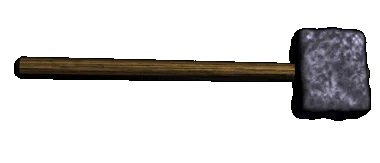

|
узнечное дело |
|
| ¬се полученное железо
и сталь в готовые к употреблению издели€ в XII веке
перековывали кузнецы. ќни проживали и в городах,
и в деревн€х. ƒеревенские кузнецы занимались изготовлением и ремонтом различного хоз€йственного и бытового инвентар€. ќсновную же массу черного металла перековывали городские кузнецы. узница была отдельным помещением, оборудованным горном и наковальней. Ќеобходимыми инструментами кузнеца были молот и молоток, клещи, зубило и бородки. ¬ажнейшим оборудованием дл€ кузнеца был кузнечный горн. √орн использовалс€ дл€ нагрева металла перед ковкой, а также дл€ нагрева готового издели€ при термической обработке. ≈го конструкци€ была довольно простой -- он представл€л собой обыкновенную жаровню с воздуходутными мехами. Ќаковальн€ была массивным металлическим бруском выт€нутой формы с плоским верхом и отход€щими в сторону одним или двум€ рогами. Ќижней частью наковальни врубалась в дерев€нный чурбан. ¬ес наковальни достигал 15-20 килограмм. ћикрорезцы, бородки и другие инструменты служили кузнецам дл€ изготовлени€ ножниц, швейных игл и ножей -- кухонных и столовых, сапожных и костерезных, бондарных, боевых и даже складных. |
|
“екст и
иллюстрации (c) 1997 Snowball Interactive Entertainment, Inc. |